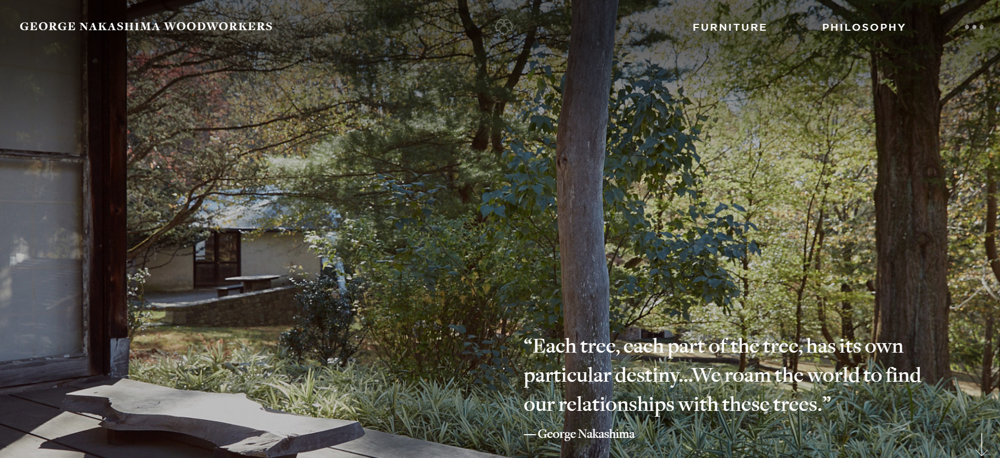

This webpage is a Norwegian-budget-hardware-ebay of sorts.
It has a bunch of vehicles basically any type of hobby or tech appliance that you might be interested in. I think?
The site is so poorly designed it makes it hard to tell exactly what is there. Before clicking on this link, you may wonder why this webpage is bad. Please click on the link, I'll give you a second.
Great! Now that you're back. Let me explain why it makes you want to throw up.
Contrast 1: Nothing is different. Yes there are lots of pictures, but they are all so similar and all the text blends in with eachother and the pictures.
Contrast 2: There is no differentiation between elements.
Contrast 3: The important elements, like price and specifications, are all the same. The only difference is color, but that color is not always consistent.
Repetition 1: This page has little to no cohesion. Elements are scattered about with various colors, fonts, shapes, and sizes.
Repetition 2: This page has multiple text colors, I counted 6, that is too many and they don't repeat in a coherent manner.
Repetition 3: The text, font, weight, and decoration are scattered around haphazardly on the page.
Alignment 1: The header (if you can call it that) is not aligned with anything, pieces branch off and are cut by pictures and other elements.
Alignment 2: All the sale pictures and boxes have no visible alignment whatsoever. They are just crammed in to fit the page without any thought.
Alignment 3: The clickable links are not formatted at all. There are groups of them and then others randomly placed about the page.
Proximity 1: Most obviously, the main content of listed items are overlapping or conjoined in strange ways. There are land rovers mixed with telescopes and toy tanks. Confusing to say the very least.
Proximity 2: This page has all its links strewn about the site. They don't have relations to eachother, such as "translators" next to "lawnmowers" in the menu bar (if you can call it a menu).
Proximity 3: The bottom of the page, where you would expect to find links, more information, or "related products" instead has extra products, a jumbled group of GIFs, and pictures that are cut off by screen bounds.
This site is a mess. It quite literally followed none of the rules of CRAPPY design. It gets no points for contrast, repetition, alignment, or proximity. I would even hazzard a guess that this website was made as a joke because it really is that bad.

This webpage is storefront-information page for a Japanese-American custom woodworking group.
It has quotes from the founders, links to the philosopy, history, examples of work, and products that they make.
This site is well crafted, showing that they put as much effort into the way the present their products and brand as they do working with the wood itself.
Take a look, click around. This website made me want to buy a coffee table, and I don't even have room for one in my apartment.
Contrast 1: The background is an off white, this connects well with the photos that play across the top of the screen and the footer at the bottom. They dark browns, greens, and blacks that contrast well with the background.
Contrast 2: The text and to some extent, pictures next to them, are dark colors like grey, brown, and black. These pop out against the back.
Contrast 3: If you head to the philosopy section of the website, the contrast is reversed. The background is pitch black and the text with pictures are white and light browns. This give a nice shift in tone from one page to the next.
Repetition 1: The repetition is obvious in the text alone. There are 3 fonts that I counted. All the headers are the same, the paragraph text is the same as every other paragraph, and the names of those whose quotes are used are the same font too.
Repetition 2: The colors are also a good example of repetition. They alternate from black to off-white, and the pictures are all browns, greys, and whites.
Repetition 3: When you go to the furniture page, there is a pattern of descriptions and paragraphs set between examples and links to different types of the furniture that they make.
Alignment 1: On the main page, there are center and margin lines in the main text that span the page vertically and horizontally that seperate each section of photos and text into their own clear sections.
Alignment 2: The main page also has good partitions on the header and footer as well as the top and bottom of the body. The links, directory, and photos are all paritioned horizontally and span the width of the page, creating good blocking.
Alignment 3: On the philosophy page, each section is partitioned by a horizontal change from pitch black background to lighter pictures. This spaces out the text and information from pictures and examples.
Proximity 1: The main page has all the links at both the top in the directory via dropdown menu, and also on the body of the page next to each of the explanations and pictures of what the links are.
Proximity 2: All of the communication information is at the bottom of each page no matter where you go in the website. So you always have a way to contact or get directions.
Proximity 3: There is also another sidebar menu at the top right of the header that contains every link to each page in the website as well as links to other related websites like a charity created by the founder.
This website is gorgeous. Each part of it was carefully crafted to show the design and workmanship of the craftsmen that it represents.
It has amazing contrast, balanced repetition, alignment that spaces the information well, and a great use of proximity to show the relations of everything on each page.
There is a reason this site won an award for design in 2019.